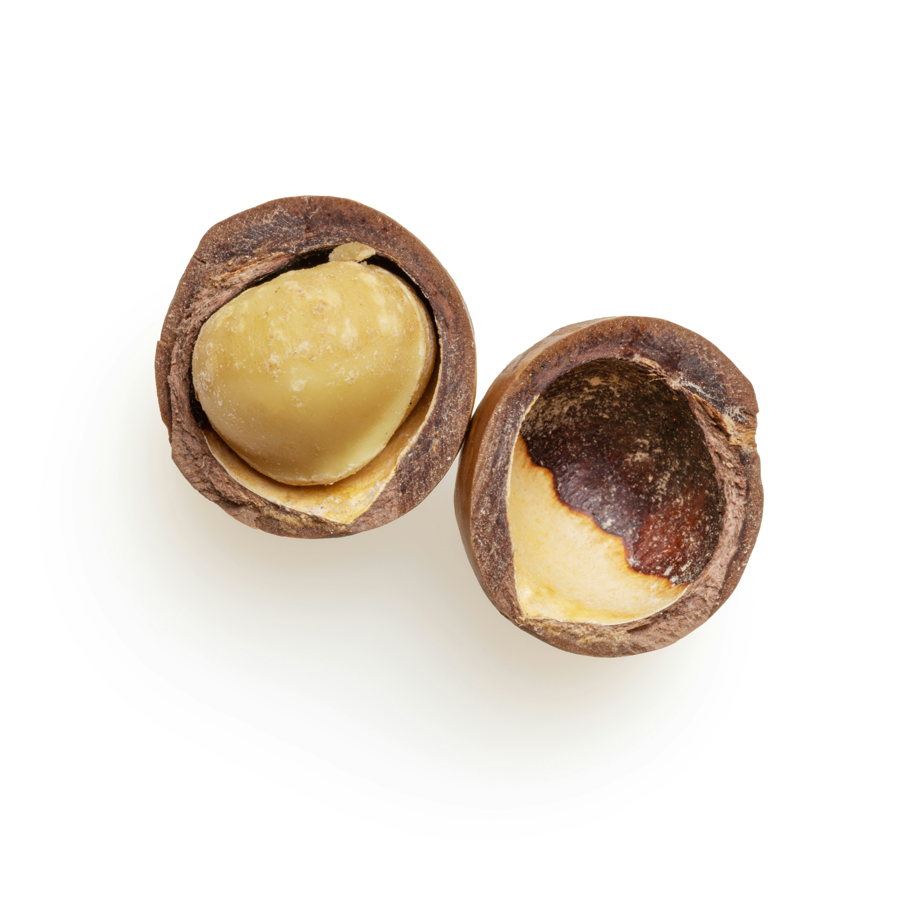
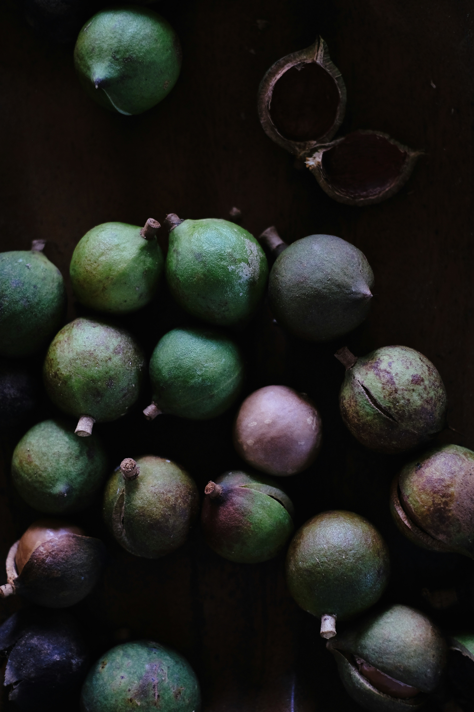

Your Guide to a Macadamia Sustainable Lifestyle
How macadamias connect nutrition, heritage, beauty, wellness, and community.
As someone who has studied sustainable food systems and personally shifted toward eco-conscious living, I’ve learned how deeply the small things we eat, use, and support can shape both our health and the planet. Macadamias, with their rich history and balanced nutrition, represent that philosophy perfectly. This guide shares what I’ve discovered through research and real-world practice, from cooking with macadamias to using their oil in everyday wellness routines.
A Rich History Rooted in the Earth
Macadamias are native to Australia, where Indigenous communities valued them for generations as a source of nutrition and connection to the land. Understanding this heritage deepens the meaning of a macadamia sustainable lifestyle, it reminds us that sustainability begins with respect. Today, modern cultivation blends this ancestral wisdom with regenerative farming methods that reduce soil depletion and encourage biodiversity.
Macadamias in Everyday Food & Sustainable Eating
From creamy macadamia milk to crunchy salad toppings, these nuts bring both nutrition and versatility to the kitchen. Embracing a macadamia sustainable lifestyle means choosing foods that are nourishing and responsibly sourced. Packed with healthy fats, fiber, and antioxidants, macadamias make everyday meals more balanced while reminding us that sustainability starts with simple choices at the table.
When I started incorporating macadamias into my own meals, I noticed how easily they replaced less sustainable ingredients. Their subtle sweetness and healthy fat content make them ideal for balanced, planet-friendly cooking.
Quick ideas
Try macadamia milk in coffee, blend nuts into pesto, or use macadamia oil for high-heat sautéing to support eco-friendly cooking habits.
Beauty Benefits of Macadamia Oil for Skin & Hair
Beyond the kitchen, macadamias shine in beauty and skincare. Macadamia oil helps moisturize, repair, and protect skin and hair. Choosing natural, traceable products aligns with a macadamia sustainable lifestyle because it prioritizes gentle, eco-friendly solutions over synthetic alternatives.
In my own skincare routine, switching to cold-pressed macadamia oil simplified everything - fewer chemicals, softer skin, and less waste. Its natural fatty acids mirror the oils our skin produces, which is why dermatologists often call it a “skin-compatible” ingredient.
Tip: Look for cold-pressed macadamia oil and brands that publish sourcing details or certifications.
Wellness and Mindful Living
Living a sustainable lifestyle is also about mindfulness, making choices that balance personal well-being with global impact. Macadamias fit perfectly into this mindset: they fuel the body with slow-burning energy while also supporting eco-conscious agriculture.
Research notes that macadamias’ monounsaturated fats contribute to heart health and may support balanced cholesterol levels. But beyond nutrition, wellness is about consistency, choosing foods and habits that create calm and clarity over time.
Macadamia nuts fuel wellness with natural energy, balance, and sustainability.

Culture and Community Connections
Macadamias aren’t just about individual benefits; they also represent community, tradition, and shared values. Around the world, farmers, artisans, and small businesses rely on macadamias for their livelihoods. Supporting fair-trade and sustainable sourcing is a meaningful part of a macadamia sustainable lifestyle because it helps the people behind the harvest thrive.
Many cooperatives and fair-trade networks now train farmers on ethical harvesting and soil renewal, ensuring that every crop supports both people and the planet. Supporting these initiatives helps communities thrive while preserving the integrity of the macadamia industry.

Conclusion: Living the Macadamia Way
A macadamia sustainable lifestyle is more than enjoying a delicious nut - it’s about nourishing food, cultural respect, eco-conscious beauty, and community support. Small steps, like adding macadamia milk to coffee or choosing fair-trade oils, can grow into meaningful habits.
Every sustainable choice, even a small one sends ripples outward. Try swapping one conventional product for a macadamia-based alternative this week and share the difference you notice. Small actions, when repeated, grow into lasting change.
Liked this guide? Try swapping macadamia milk into your morning coffee this week and share the experience with someone close.